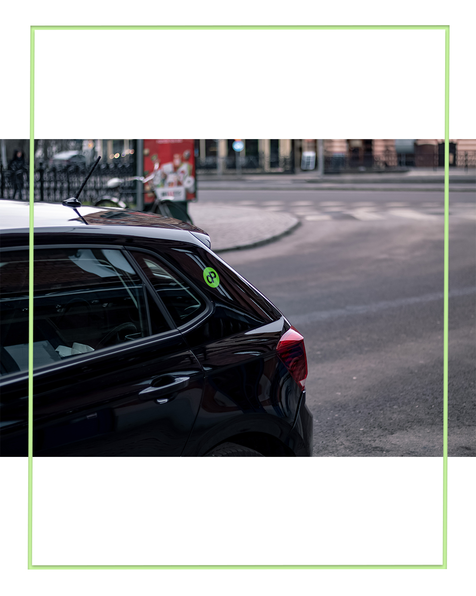
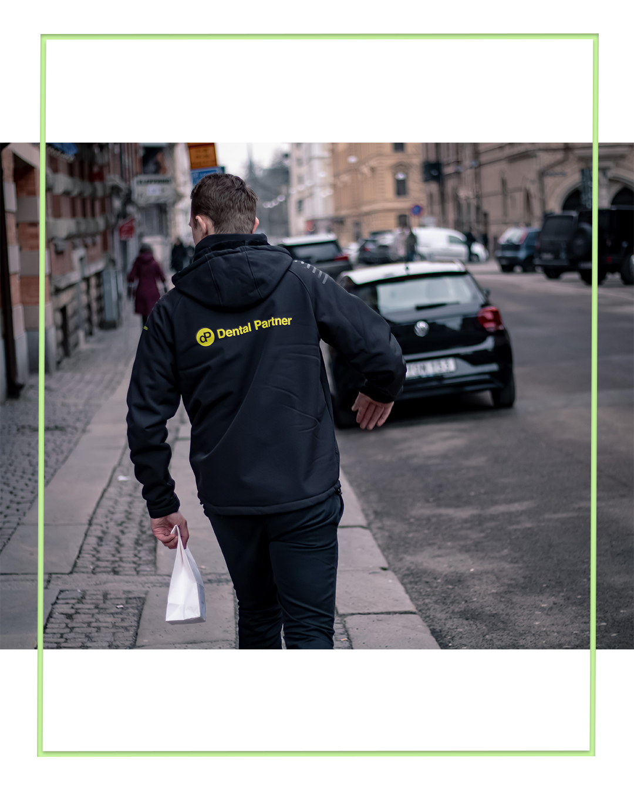

Snabba leveranser och hög servicenivå inom dentalbranschen. Ett välfungerande koncept sedan 1995. Fokusera på kvalité, vi sköter logistiken.
RING OSS: 070-791 35 25Sedan start har vi varit specialiserade på att erbjuda leveranser exklusivt till tandtekniker och tandläkare. Dina arbeten hämtas upp snabbare än hos andra.

Våra medarbetare är hos tandläkarna flera gånger om dagen. Ni får era arbeten snabbare.
Med vårt koncept kan ert lab befinna sig på flera ställen. Vi har delat upp staden i flera distrikt för effektiv och miljövänlig transport.

Vi bjuder på upphämtningen om det sker i samband med leverans. Vi har en låg taxa som andra budverksamheter inte kan matcha.
Vår logistik arbetar dynamiskt i bakgrunden så att ni kan fokusera helt på hantverket och patienten.
Scrolla för att se insidan ↓